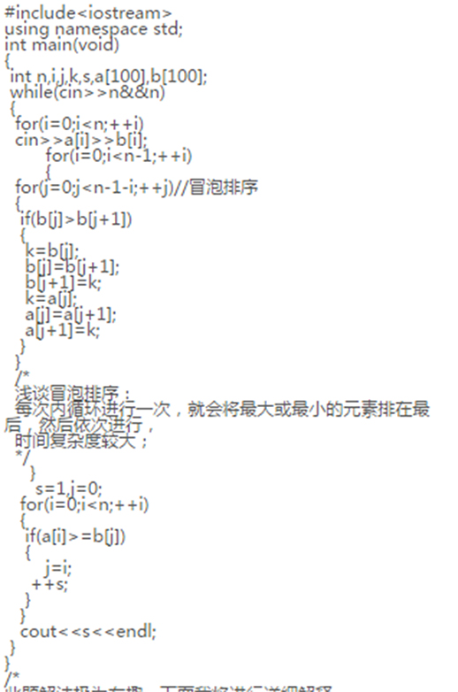
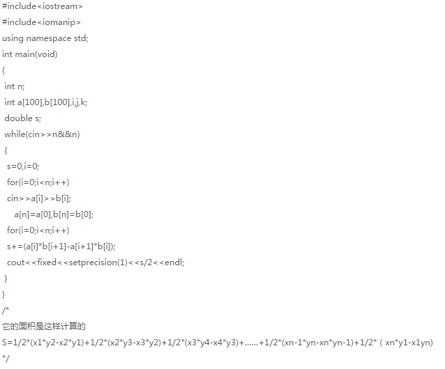
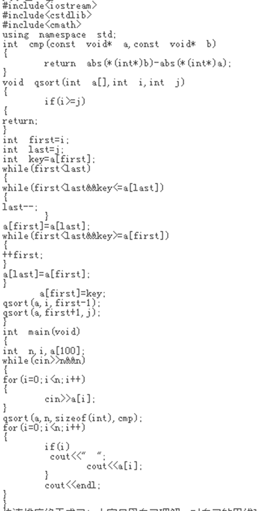
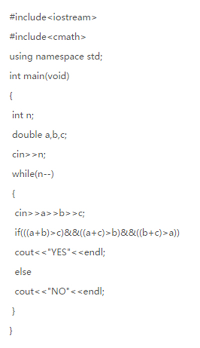

1.ACM简介：
ACM，全称ACM-ICPC，由以下两部分组成。ACM-Association for Computing
Machinery , 即国际计算机学会。ICPC-International Collegiate Programming
Contest , 即国际大学生程序设计竞赛。ACM国际大学生程序设计竞赛(英文全称：ACM
International Collegiate Programming Contest（ACM-ICPC或ICPC）是由国际计算
机学会（ACM）主办的，一项旨在展示大学生创新能力、团队精神和在压力下编写程序、
分析和解决问题能力的年度竞赛。经过近30多年的发展，ACM国际大学生程序设计竞赛已
经发展成为最具影响力的大学生计算机竞赛。赛事目前由IBM公司赞助。
2.hdoj2037详解：

此题解法极为有趣：下面我将进行详细解释，开始对所以数据进行冒泡排序，因为数据都
是以段的形式出现的，需要在将一个赋值后，将数组序号赋给另一个端点，所以不用调用
sort函数，还有为何是排后面的端点尼，因为排序为的是什么尼，为的是找出前端点值大
于后端点值，这样才能使满足都能看的条件所以就要用后端的进行排序，仔细想想 最为巧
妙为最后一个循环，其主要目的就是实现算法：什么算法尼，好好想想，哈哈就是因为是
已经排好序的，现在开始主要算法，第一个后端点值是最小的，然后开始寻找一个满足条
件而且后端点值最小的点，为的是使尽可能多看节目，所以 这个想法是正确的，好好想想，
希望对奋斗在haoj的acmer兄弟姐妹们有所帮助：
3.hdoj2036多边形面积求法

4.快速排序

5.hdoj2039关键就是两边之和大于第三边，并且是double型
